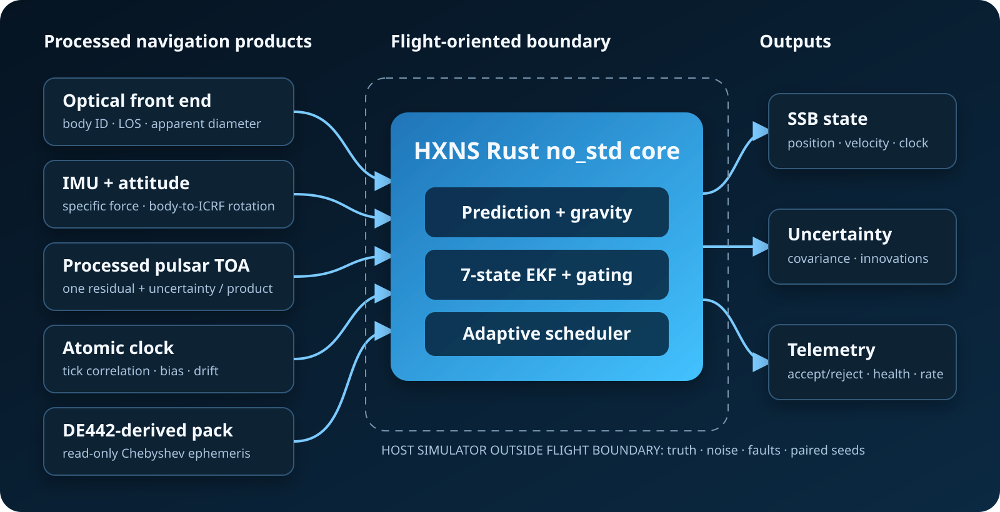

HYBRID XNAV · OPTICAL NAV · INERTIAL PROPAGATION
Inspectable autonomy for the long distance between observations.
HXNS is a Rust no_std navigation research prototype that combines processed optical geometry, inertial propagation, processed pulsar timing, atomic-clock correlation, and a compact planetary ephemeris.

ARCHITECTURE
The simulator does not replace the estimator.
Truth, synthetic noise, and injected faults stay on the host side. The flight-oriented boundary consumes typed processed products and emits state, covariance, innovations, health decisions, and engineering telemetry.
Navigation convention
State is represented in the Solar-System Barycentric frame using ICRF/J2000 axes. Atomic-clock ticks are correlated to TDB; CPU wall time is not navigation time.
REPRODUCIBLE EVIDENCE
Contribution is measured with paired seeds and ablation.
Common random numbers
Suites under comparison reuse initial error, noise generation order, and fault timing.
Fault campaign
Range bias, camera occlusion, pulsar dropout, and IMU bias are reported explicitly.
Unfavorable results retained
A cruise-window mismatch remains documented as a calibration and weighting question.
CUSTOMER EVALUATION
Declare assumptions. Run the same boundary. Keep the evidence.
The local console validates readable sensor assumptions, runs a background paired-seed campaign, and returns the exact configuration beside HTML, JSON, and CSV artifacts.
- Non-confidential fit check
- Private processed-sensor intake
- Reviewed configuration
- Reproducible campaign
- Report and engineering interpretation
HXNS is not presented as flight qualification, certified hardware performance, or an operational replacement for ground navigation. The purpose of the current release is to make estimator assumptions, sensor contribution, and failure behavior inspectable before hardware integration.